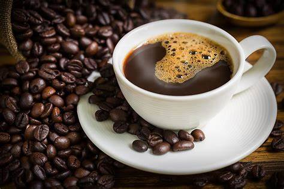

COFFEE SHOP
Coffee is a brewed drink prepared from roasted coffee beans, the seeds of berries from certain Coffea species. When coffee berries turn from green to bright red in color – indicating ripeness – they are picked, processed, and dried. Dried coffee seeds (referred to as "beans") are roasted to varying degrees, depending on the desired flavor.